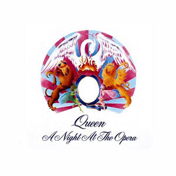
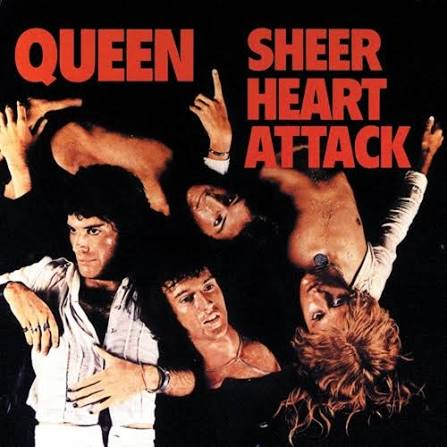

Top 5 - 16 bits Games
Por: Rodrigo Mendes
- 1º - Super Metroid - SNES
- 2º - Landstalker - Mega Drive
- 3º - Chrono Trigger - SNES
- 4º - Castlevania - Rondo of Blood - PC Engine
- 5º - Beyond Oasis - Mega Drive
Tecnologia, Games e Eletrônica

Por: Rodrigo Mendes

Por: Rodrigo Mendes
Existem modificações em consoles antigos que melhoram resolução da época para que funcione em TV's modernas como modHDMI, Scart e Bypass. Também existem aparrelhos chamados de escalonadores e multiplicadores de linhasque convertem resoluções baixas (144p, 240p, 360p) em alta resolução (760p, 1080i e 1080p) como GBS Control e OSSC e até em 4K como RetroTink.